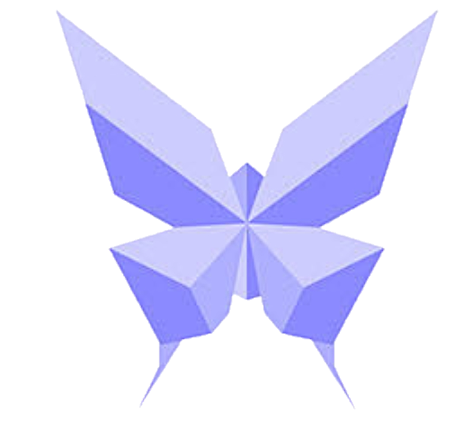
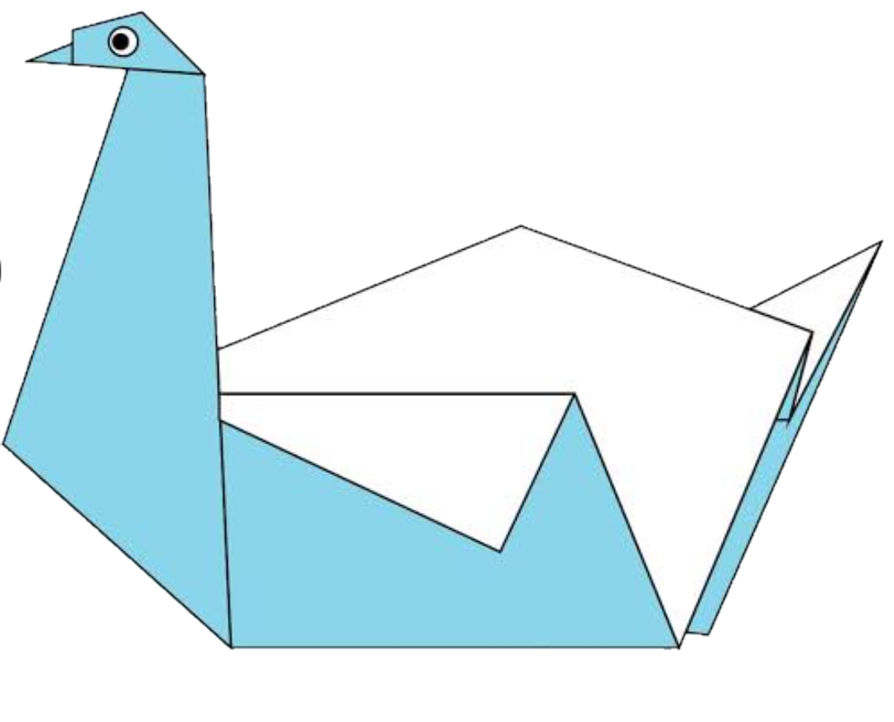

Origami Instructions and Designs.
**Follow step by step diagrams are the easiest way to fold the things out of paper.
Trying to fing the good
origami work on internet can be tough so to help you I have
make this website.**
1. Camel

Do you know!
- Camel is known as the ship of desert because it is mainly the only mode of transportation there.
- In India Camels are mostly found in deserts of Rajasthan and Gujarat.
- Camel is a herbivorous animal.
2. chameleon

Do you know!
- There are around 160 Chameleon species on this planet.
- According to their deits, Chameleons are omnivorous.
- Chameleons use their tongue to catch their prey, which are mostly insects.
3. Pigeon

Do you know!
- LifeSpan of average pigeon is around 15 years
- Pigeons are very clever and they have unique ability to find their way home.
- Pigeons are herbivorous in nature and their deit includes seeds, fruits and plants.
4. butterfly

Do you Know!
- One of the most inportant winged insect is butterfly.
- They have six legs which are joined, three parts of body and two antenas.
- They suck the juice from the flower.
5. Swan

Do you know!
- Swan is a bird that usually swims on water bodies like ponds, streams, etc.
- A swan looks like a duck as it has a long beak, white feathers and wings.
- In spite of having wings, it cannot fly. However, it can take long jumps.
6. Panda

Do you know!
- Pandas are generally found in thick bamboo forests, high up mountains of central china.
- pandas are BIG eaters-everyday they fill their tummies for up to 12 hours, shifting up to 12 kilometers.
- Sadly, these beautiful bears are endangered, and its estimately only 1,000 remain in the wild.
THANK YOU